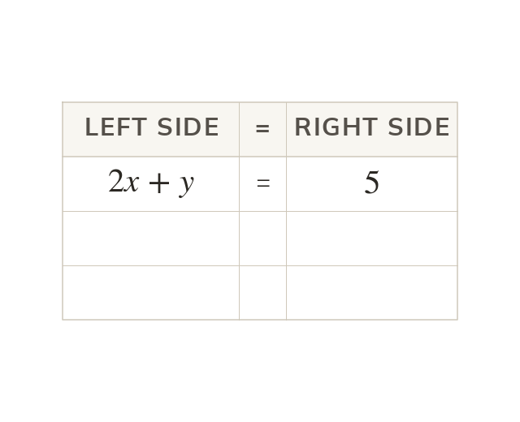
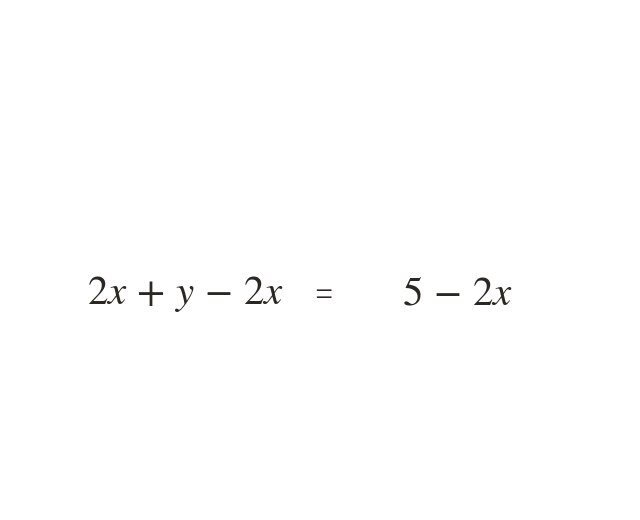
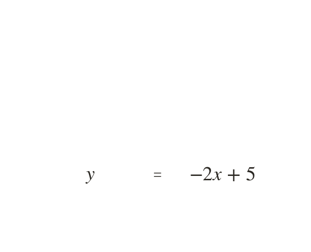
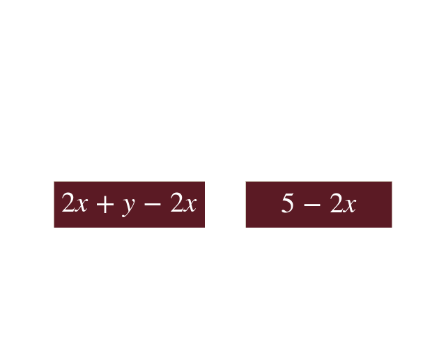

Rearrange into
Rearrange into before drawing it. Take from both sides, as when solving.
An equation like is rearranged into before it is drawn. Take from both sides, just as when solving an equation.